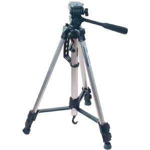
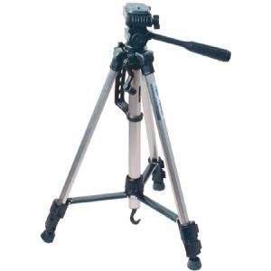

directory [napoleon reference]
favicon candidates

 

🍃🍃🍃🍃🍃🍃🍃🍃🍃🍃🍃🍃🍃🍃🍃🍃🍃🍃🍃🍃🍃🍃🍃🍃🍃🍃🍃🍃🍃
enjoy the solitude!
🍂🍂🍂🍂🍂🍂🍂🍂🍂🍂🍂🍂🍂🍂🍂🍂🍂🍂🍂🍂🍂🍂🍂🍂🍂🍂🍂🍂🍂
websites i fw a lot
-
where it all started:
are.na
con la parola « it » intedevo:
-
intention when using internet
-
online identity exists outside of social media
-
in fact, i'd argue it's even stronger
-
for us, by us typesh-t
-
extra practice and sister sites:
-
web philosophy:
🍏🍏🍏🍏🍏🍏🍏🍏🍏🍏🍏🍏🍏🍏🍏🍏🍏🍏🍏🍏🍏🍏🍏🍏🍏🍏🍏🍏🍏
i hope to make a personal website soon... inspo?
-
a cool calendar photobook by holiday? which reminded me of a chrome extension
-
off topic, but holiday linked this song in google drive. is it related to this one?
shazam says 一日の始まり by ハセガワ ともき, the other one is 一日の始まりに... by Every Little Thing
both are good :-] sidenote: so grateful shazam exists publicly!
- tons of sprites in
wrasse [micro-community space]
-
a super duper cool light switch in the top right though i should make it automatic too
- wow ce mec tire des photos, écrit des poèmes et il dessine sur papier et sur l'écran
on trouve tout ici
-
speaks for itself: in the time since, I got a job, tumbled some rocks, moved a couch up a ladder, and turned 29.
-
so, so beautiful he bleeds through the pen, the brush and the keyboard
-
i fw the way this guy lays out his homepage + his special.fish journal
- to this person from estonia i sent an email and got a response!
-
possesses a charm that should not be remotely humanely possible
🍎🍎🍎🍎🍎🍎🍎🍎🍎🍎🍎🍎🍎🍎🍎🍎🍎🍎🍎🍎🍎🍎🍎🍎🍎🍎🍎🍎🍎